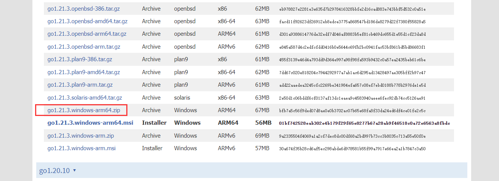
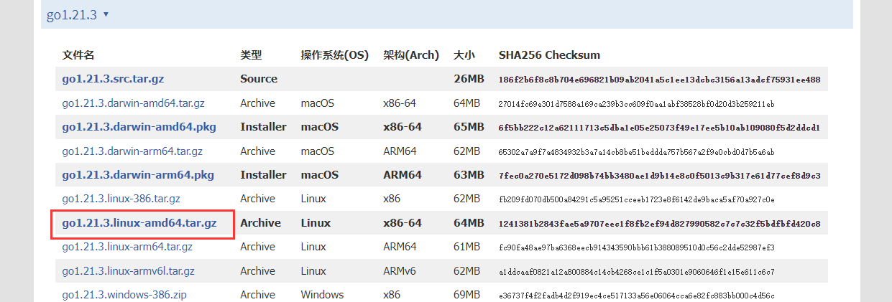
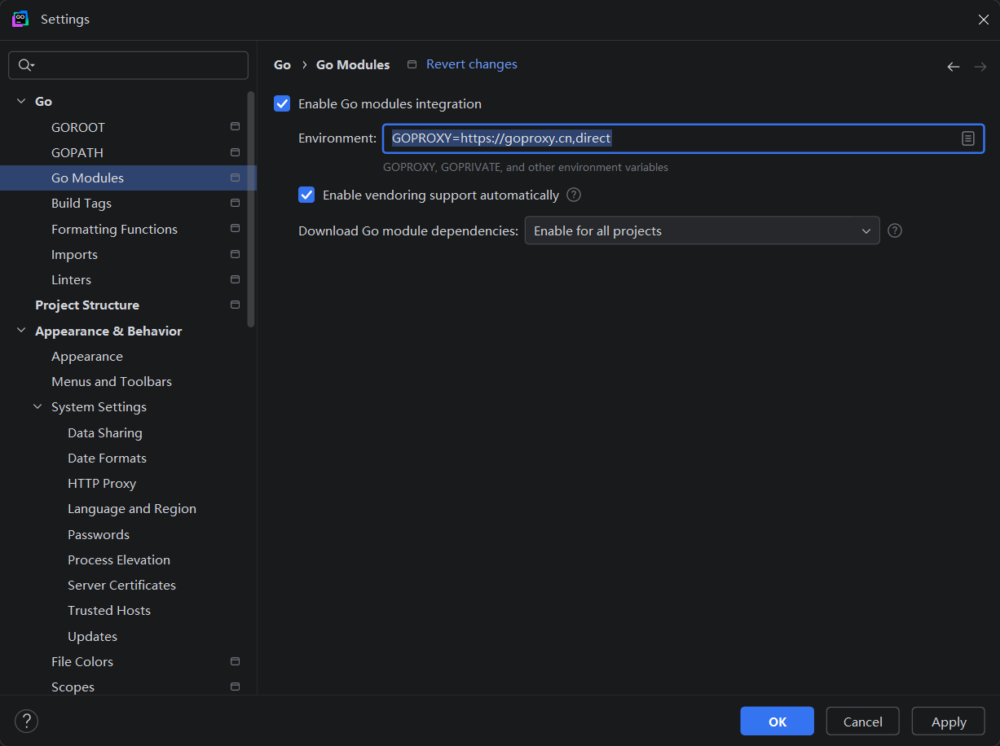

Go 环境搭建与工具配置
相对于其他语言，go语言的环境搭建及其简单
官网
访问不了的就访问中文网就好了
go安装包下载
安装指定版本的安装包就好了
windows下的安装
windows就选 windows-arm64.zip就好了

然后需要将go的对应bin目录设置为环境变量，这一步是方便可以在命令行里面直接使用go命令
还需要将go的第三方bin目录设置为环境变量，一般是在用户目录下，这一步是为了以后使用go install安装的第三方可执行文件可以直接使用
linux下的安装

Go复制代码
cd /opt
wget https://studygolang.com/dl/golang/go1.21.3.linux-amd64.tar.gz
tar -xvf go1.21.3.linux-amd64.tar.gz
编辑环境变量
Vim script复制代码
vim /etc/profile
在文件后追加以下内容
export GOPROXY=https://goproxy.cn
export GOROOT=/opt/go
export PATH=$PATH:$GOROOT/bin
export GOPATH=/opt/go/pkg
export PATH=$PATH:$GOPATH/bin
退出并保存，刷新环境变量
source /etc/profile
开发工具的选择
理论上来说，用记事本也不是不行
但是有一个趁手的兵器肯定还是更合适的
首选肯定是goland，当然vscode也是可以的
https://www.jetbrains.com/zh-cn/go/download/other.html
2023.2版本之后的UI变成了类似vscode的风格，如果不喜欢的话，可以选2023.1之前的版本
vscode下载
https://code.visualstudio.com/
然后去下载go的插件就好了
参考文档
vscode https://code.visualstudio.com/
vscode安装go环境 https://blog.csdn.net/flurry_rain/article/details/128124573
goland https://www.jetbrains.com/zh-cn/go/download/other.html
go安装 https://studygolang.com/dl
Goland 国内代理 使用第三方包必备

GOPROXY=https://goproxy.cn,direct
https://goproxy.cn：国内七牛云代理，下载极快direct：如果代理上没有这个包，直接去原地址下载